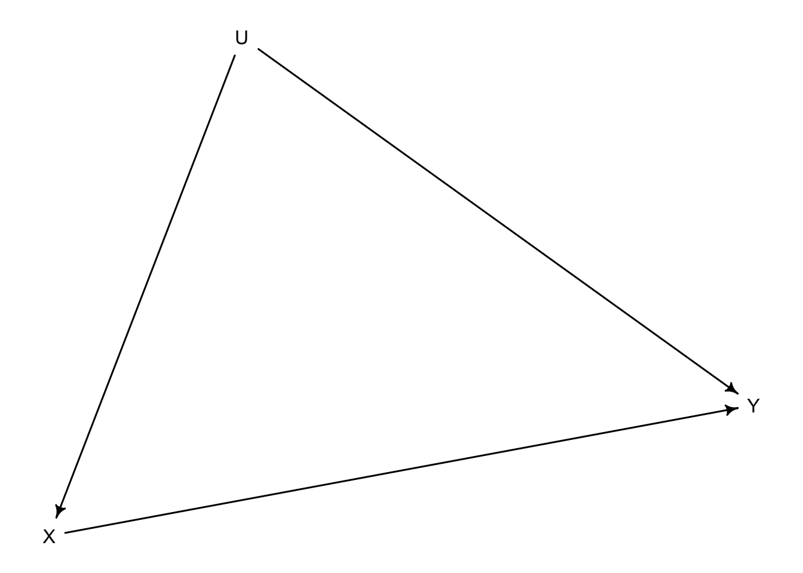
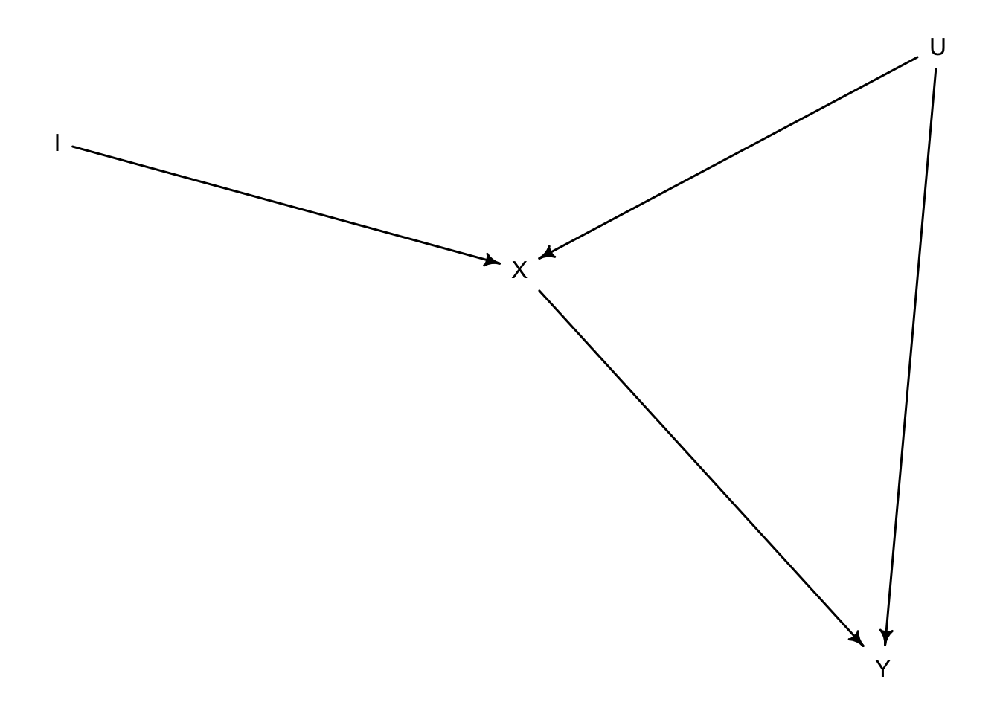
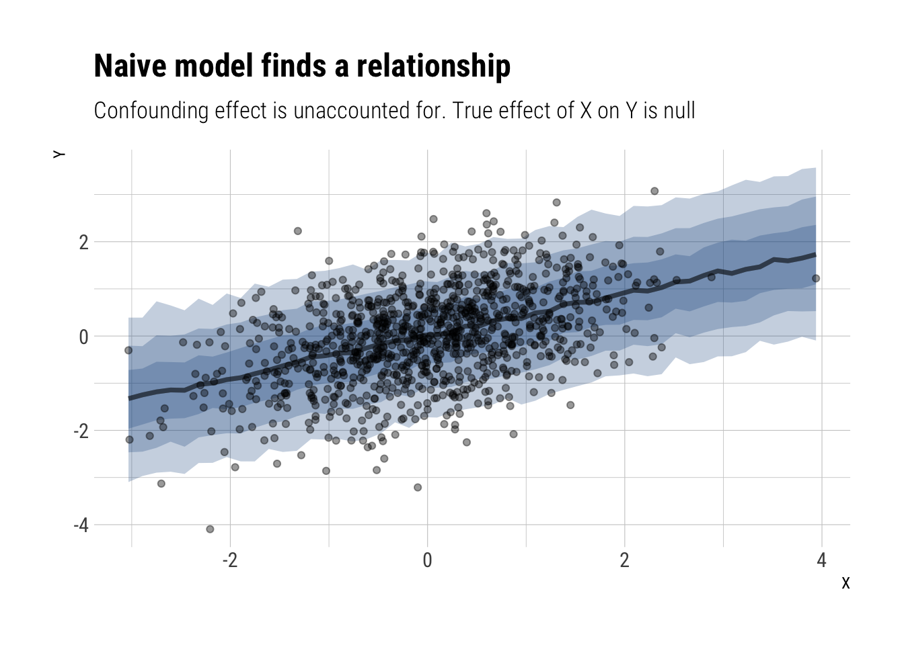
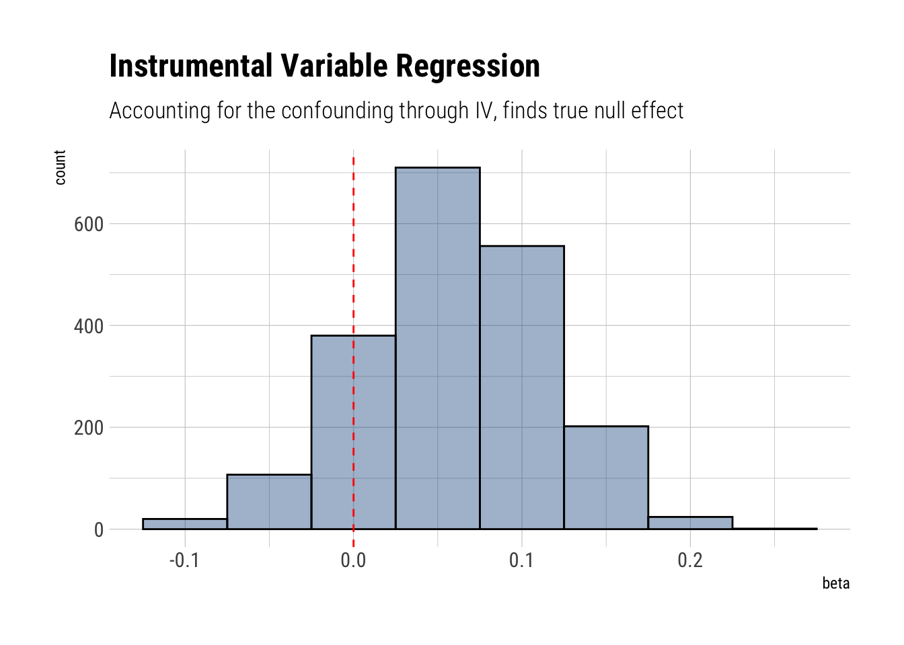

dag_confound <- dagitty::dagitty('dag{
X -> Y
X <- U
U -> Y
}')
drawdag(dag_confound)
June 3, 2020
Statistical Rethinking is a fabulous course on Bayesian Statistics (and much more). In what follows, I’ll give a succinct presentation of Instrumental Variable Regression in a Bayesian setting using simulated data.
I had already seen the traditional econometrics formulation and yet found Richard’s presentation both illuminating and fun. It’s a testament of his incredible achievement with this book.
The start of every instrumental variable setting is the following. We want to estimate the causal effect of \(X\) on \(Y\). However, there’s a fork between \(X\) and \(Y\): an unobserved variable \(U\) that has an effect on both of them. In DAG form:
Therefore, there’s a backdoor path from \(X\), through \(U\), toward \(Y\) that will bias our estimates. One alternative would be to statistically adjust by \(U\); however, we don’t observe \(U\).
Colliders are dangerous and scary, as Richard has said a many times. However, they can also be useful. They can create statistical relationships between certain variables that allows us to introduce certain otherwise unavailable statistical information into our models. This is the case with an instrument, \(I\), that is only related to \(X\) in this DAG.

Noticed that we’ve created a collider out of \(X\). Therefore, if we open the collider by statistically adjusting simultaneously by \(X\) and \(I\), there will be a statistical relationship (not causal) between \(I\) and \(U\). Thus, a collider opens a path that can help us adjust by \(U\). Our goal, then, is to create a model that simultaneously opens the collider and estimates the effefct of \(X\) on \(Y\).
The model then must be simultaneous. It must open the collider and regress \(Y\) on \(X\). The solution is thu:
\[ \begin{bmatrix} Y_i \\ X_i \end{bmatrix} \sim MVNormal(\begin{bmatrix} \mu_{Y,i} \\ \mu_{X, y} \end{bmatrix}, S) \]
\[ \mu_{Y,i} = \alpha_y + \beta X_i \]
\[ \mu_{X, i} = \alpha_x + \gamma I \]
We are modelling \(X, Y\) simultaneously with a joint error structure represented by \(S\). Notice, then, that at both linear models we should be adjusting by \(U\). Therefore, the errors of our each of our linear regressions, represented by \(S\), will be correlated; this is what a fork does and what creates the original bias in our estimates. However, we are opening simultaneously the collider on \(X\) by adjusting with \(I\). Therefore, statistical information about \(U\) is entering into our model in the form of a correlated error structure (represented by \(S\)) between the two linear regressions. This statistical information of \(U\) will then allow us to causally estimate the effect of \(X\) on \(Y\).
Note that, given a DAG, we can algorithmically compute if there is an instrument that we can use.
In this case we will simulate data where the true effect of \(X\) on \(Y\) is null.
A naive regression won’t account by the confounding effect of \(U\):
model_naive <- ulam(
alist(
Y ~ normal(mu, sigma),
mu <- alpha + beta*X,
alpha ~ normal(0, 1),
beta ~ normal(0, 1),
sigma ~ exponential(1)
),
chains = 4, cores = 4,
data = data_sim
)Running MCMC with 4 parallel chains, with 1 thread(s) per chain...
Chain 1 Iteration: 1 / 1000 [ 0%] (Warmup)
Chain 1 Iteration: 100 / 1000 [ 10%] (Warmup)
Chain 1 Iteration: 200 / 1000 [ 20%] (Warmup)
Chain 1 Iteration: 300 / 1000 [ 30%] (Warmup)
Chain 1 Iteration: 400 / 1000 [ 40%] (Warmup)
Chain 1 Iteration: 500 / 1000 [ 50%] (Warmup)
Chain 1 Iteration: 501 / 1000 [ 50%] (Sampling)
Chain 2 Iteration: 1 / 1000 [ 0%] (Warmup)
Chain 2 Iteration: 100 / 1000 [ 10%] (Warmup)
Chain 2 Iteration: 200 / 1000 [ 20%] (Warmup)
Chain 2 Iteration: 300 / 1000 [ 30%] (Warmup)
Chain 2 Iteration: 400 / 1000 [ 40%] (Warmup)
Chain 2 Iteration: 500 / 1000 [ 50%] (Warmup)
Chain 2 Iteration: 501 / 1000 [ 50%] (Sampling)
Chain 2 Iteration: 600 / 1000 [ 60%] (Sampling)
Chain 3 Iteration: 1 / 1000 [ 0%] (Warmup)
Chain 3 Iteration: 100 / 1000 [ 10%] (Warmup)
Chain 3 Iteration: 200 / 1000 [ 20%] (Warmup)
Chain 3 Iteration: 300 / 1000 [ 30%] (Warmup)
Chain 3 Iteration: 400 / 1000 [ 40%] (Warmup)
Chain 3 Iteration: 500 / 1000 [ 50%] (Warmup)
Chain 3 Iteration: 501 / 1000 [ 50%] (Sampling)
Chain 3 Iteration: 600 / 1000 [ 60%] (Sampling)
Chain 4 Iteration: 1 / 1000 [ 0%] (Warmup)
Chain 4 Iteration: 100 / 1000 [ 10%] (Warmup)
Chain 4 Iteration: 200 / 1000 [ 20%] (Warmup)
Chain 4 Iteration: 300 / 1000 [ 30%] (Warmup)
Chain 4 Iteration: 400 / 1000 [ 40%] (Warmup)
Chain 4 Iteration: 500 / 1000 [ 50%] (Warmup)
Chain 4 Iteration: 501 / 1000 [ 50%] (Sampling)
Chain 1 Iteration: 600 / 1000 [ 60%] (Sampling)
Chain 1 Iteration: 700 / 1000 [ 70%] (Sampling)
Chain 1 Iteration: 800 / 1000 [ 80%] (Sampling)
Chain 1 Iteration: 900 / 1000 [ 90%] (Sampling)
Chain 1 Iteration: 1000 / 1000 [100%] (Sampling)
Chain 2 Iteration: 700 / 1000 [ 70%] (Sampling)
Chain 2 Iteration: 800 / 1000 [ 80%] (Sampling)
Chain 2 Iteration: 900 / 1000 [ 90%] (Sampling)
Chain 2 Iteration: 1000 / 1000 [100%] (Sampling)
Chain 3 Iteration: 700 / 1000 [ 70%] (Sampling)
Chain 3 Iteration: 800 / 1000 [ 80%] (Sampling)
Chain 3 Iteration: 900 / 1000 [ 90%] (Sampling)
Chain 3 Iteration: 1000 / 1000 [100%] (Sampling)
Chain 4 Iteration: 600 / 1000 [ 60%] (Sampling)
Chain 4 Iteration: 700 / 1000 [ 70%] (Sampling)
Chain 4 Iteration: 800 / 1000 [ 80%] (Sampling)
Chain 4 Iteration: 900 / 1000 [ 90%] (Sampling)
Chain 1 finished in 0.5 seconds.
Chain 2 finished in 0.4 seconds.
Chain 3 finished in 0.4 seconds.
Chain 4 Iteration: 1000 / 1000 [100%] (Sampling)
Chain 4 finished in 0.4 seconds.
All 4 chains finished successfully.
Mean chain execution time: 0.4 seconds.
Total execution time: 0.8 seconds. mean sd 5.5% 94.5% n_eff Rhat4
alpha -0.0007866032 0.02848885 -0.04462621 0.04554595 1496.227 1.0004385
beta 0.4439785015 0.02900968 0.39840345 0.49061714 2087.683 1.0016685
sigma 0.8969762870 0.02008460 0.86616765 0.92862533 1929.604 0.9991075Indeed, we have an estimate with a 87% compatibility interval of (0.40, 0.49) when we know that the true effect is zero. We can plot the expected relationship:
data.frame(data_sim) %>%
data_grid(X = seq_range(X, 50)) %>%
add_predicted_draws(model_naive) %>%
ggplot(aes(X, Y)) +
stat_lineribbon(aes(y = .prediction), alpha = 1/4, fill = "dodgerblue4") +
geom_point(data = data.frame(data_sim), alpha = 0.4) +
scale_fill_brewer(palette = "Greys") +
labs(title = "Naive model finds a relationship",
subtitle = "Confounding effect is unaccounted for. True effect of X on Y is null")
Given our DAG and our data, we can do better. We can fit a multivariate model that, by virtue of opening a collider on \(X\), will allows us to statistical adjust by the confounding factor \(U\).
model_instrumental <- ulam(
alist(
c(Y, X) ~ multi_normal(c(muY, muX), Rho, Sigma),
muY <- alphaY + beta*X,
muX <- alphaX + gamma*I,
c(alphaY, alphaX) ~ normal(0, 0.2),
c(beta, gamma) ~ normal(0, 0.5),
Rho ~ lkj_corr(2),
Sigma ~ exponential(1)
),
data = data_sim, chains = 4, cores = 4
)Running MCMC with 4 parallel chains, with 1 thread(s) per chain...
Chain 1 Iteration: 1 / 1000 [ 0%] (Warmup)
Chain 2 Iteration: 1 / 1000 [ 0%] (Warmup)
Chain 3 Iteration: 1 / 1000 [ 0%] (Warmup)
Chain 4 Iteration: 1 / 1000 [ 0%] (Warmup)
Chain 1 Iteration: 100 / 1000 [ 10%] (Warmup)
Chain 2 Iteration: 100 / 1000 [ 10%] (Warmup)
Chain 3 Iteration: 100 / 1000 [ 10%] (Warmup)
Chain 4 Iteration: 100 / 1000 [ 10%] (Warmup)
Chain 2 Iteration: 200 / 1000 [ 20%] (Warmup)
Chain 3 Iteration: 200 / 1000 [ 20%] (Warmup)
Chain 4 Iteration: 200 / 1000 [ 20%] (Warmup)
Chain 1 Iteration: 200 / 1000 [ 20%] (Warmup)
Chain 3 Iteration: 300 / 1000 [ 30%] (Warmup)
Chain 4 Iteration: 300 / 1000 [ 30%] (Warmup)
Chain 2 Iteration: 300 / 1000 [ 30%] (Warmup)
Chain 1 Iteration: 300 / 1000 [ 30%] (Warmup)
Chain 4 Iteration: 400 / 1000 [ 40%] (Warmup)
Chain 3 Iteration: 400 / 1000 [ 40%] (Warmup)
Chain 2 Iteration: 400 / 1000 [ 40%] (Warmup)
Chain 1 Iteration: 400 / 1000 [ 40%] (Warmup)
Chain 4 Iteration: 500 / 1000 [ 50%] (Warmup)
Chain 4 Iteration: 501 / 1000 [ 50%] (Sampling)
Chain 3 Iteration: 500 / 1000 [ 50%] (Warmup)
Chain 3 Iteration: 501 / 1000 [ 50%] (Sampling)
Chain 2 Iteration: 500 / 1000 [ 50%] (Warmup)
Chain 2 Iteration: 501 / 1000 [ 50%] (Sampling)
Chain 1 Iteration: 500 / 1000 [ 50%] (Warmup)
Chain 1 Iteration: 501 / 1000 [ 50%] (Sampling)
Chain 3 Iteration: 600 / 1000 [ 60%] (Sampling)
Chain 4 Iteration: 600 / 1000 [ 60%] (Sampling)
Chain 1 Iteration: 600 / 1000 [ 60%] (Sampling)
Chain 2 Iteration: 600 / 1000 [ 60%] (Sampling)
Chain 3 Iteration: 700 / 1000 [ 70%] (Sampling)
Chain 4 Iteration: 700 / 1000 [ 70%] (Sampling)
Chain 1 Iteration: 700 / 1000 [ 70%] (Sampling)
Chain 2 Iteration: 700 / 1000 [ 70%] (Sampling)
Chain 3 Iteration: 800 / 1000 [ 80%] (Sampling)
Chain 4 Iteration: 800 / 1000 [ 80%] (Sampling)
Chain 1 Iteration: 800 / 1000 [ 80%] (Sampling)
Chain 2 Iteration: 800 / 1000 [ 80%] (Sampling)
Chain 3 Iteration: 900 / 1000 [ 90%] (Sampling)
Chain 4 Iteration: 900 / 1000 [ 90%] (Sampling)
Chain 1 Iteration: 900 / 1000 [ 90%] (Sampling)
Chain 2 Iteration: 900 / 1000 [ 90%] (Sampling)
Chain 3 Iteration: 1000 / 1000 [100%] (Sampling)
Chain 3 finished in 11.8 seconds.
Chain 1 Iteration: 1000 / 1000 [100%] (Sampling)
Chain 4 Iteration: 1000 / 1000 [100%] (Sampling)
Chain 1 finished in 12.1 seconds.
Chain 4 finished in 12.1 seconds.
Chain 2 Iteration: 1000 / 1000 [100%] (Sampling)
Chain 2 finished in 12.8 seconds.
All 4 chains finished successfully.
Mean chain execution time: 12.2 seconds.
Total execution time: 12.8 seconds. mean sd 5.5% 94.5% n_eff Rhat4
alphaX -0.0007029589 0.02612907 -0.04213007 0.04238940 1514.2057 1.000685
alphaY -0.0007681863 0.03114677 -0.04975118 0.04891647 1311.7424 1.000845
gamma 0.5686533460 0.02628153 0.52624149 0.61137419 1414.5350 1.001943
beta 0.0594884285 0.05408430 -0.02861268 0.14559261 970.4573 1.000913Whereas before we posited a positive and relatively large effect of \(X\) on \(Y\), now we correctly infer that the true effect is null. Because \(\beta\) has lots of its mass around zero.
model_instrumental %>%
spread_draws(beta) %>%
ggplot(aes(beta)) +
geom_histogram(color = "black", fill = "dodgerblue4", alpha = 4/10,
binwidth = 0.05) +
geom_vline(aes(xintercept = 0), linetype = 2, color = "red") +
labs(title = "Instrumental Variable Regression",
subtitle = "Accounting for the confounding through IV, finds true null effect")